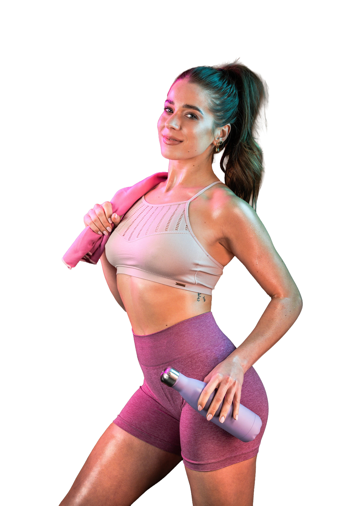
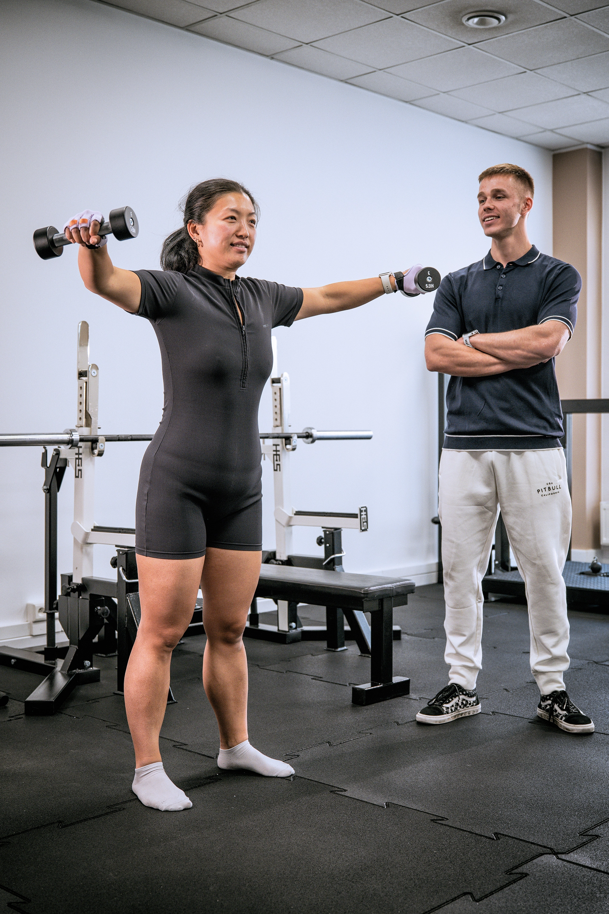

Patrzysz w lustro i w końcu się sobie podobasz.
Glow Up:
12 tygodni, które pomogą Ci odzyskać formę, energię i pewność siebie.
Bo kiedy zaczynasz dobrze czuć się we własnym ciele, zmienia się więcej niż tylko sylwetka
Umów bezpłatną konsultację
✓ 12 tygodni prowadzenia
✓ Trening + dieta + wsparcie
✓ Trening + dieta + wsparcie

Program Glow Up powstał dla kobiet, które chcą widzieć efekty treningów i nadal mieć dużo czasu dla siebie.
BEZ
Liczenia każdej kalorii
BEZ
Spędzania całych dni na siłowni
BEZ
Rezygnowania z przyjemności i spotkań z bliskimi
Efekty?
Twoje ciało staje się jędrniejsze, silniejsze i bardziej wysportowane.
Masz energię nawet po całym dniu pracy i nie kończysz dnia bez sił na kanapie.
Masz plan, wsparcie i wiesz, co robić, żeby osiągać efekty oraz utrzymywać je na dłużej.
Odzyskujesz pewność siebie w relacjach, w pracy, na plaży i w codziennym życiu.
Umów bezpłatną konsultację
Porozmawiamy o Twoich celach, poznamy Twoją sytuację i pokażemy Ci, jak mogłaby wyglądać Twoja droga do lepszej sylwetki, większej energii i pewności siebie.
Bez zobowiązań.
Bez presji.
Sprawdzimy, czy Glow Up jest dla Ciebie.
Umów bezpłatną konsultację
Co zawiera program Glow Up?
Trening dopasowany do Ciebie
Nie otrzymujesz gotowego planu z internetu. Tworzymy proces dopasowany do Twojego celu, możliwości, stylu życia i specyfiki kobiecego organizmu.
Plan żywieniowy, który da się łatwo utrzymać
Bez głodówek i produktów „zakazanych”. Otrzymujesz jasne wytyczne i sposób odżywiania, który wspiera Twój progres na siłowni, a jednocześnie pasuje do codziennego życia.
Stałe wsparcie i prowadzenie
Regularnie monitorujemy postępy, wprowadzamy zmiany i pomagamy przejść przez trudniejsze momenty. Nie zostajesz sama z planem i nadzieją, że „tym razem się uda”.

Dlaczego stworzyliśmy Glow Up?
W Hiperboli wierzymy, że trening może zmienić znacznie więcej niż tylko sylwetkę.
Dla naszego zespołu aktywność fizyczna była narzędziem, które pomogło odzyskać zdrowie, sprawność, energię i poczucie wpływu na własne życie.
Poczuliśmy na własnej skórze, jak odpowiednio poprowadzony proces poprawia nie tylko wygląd, ale również samopoczucie, odporność na stres i codzienne funkcjonowanie.
Dlatego stworzyliśmy Glow Up - program dla kobiet, które chcą czuć się lepiej we własnym ciele i widzieć realne efekty swoich starań.
Bez chaosu.
Bez presji.
Bez ciągłego zaczynania od nowa.
Po prostu z planem, wsparciem i procesem dopasowanym do człowieka, a nie do przypadkowego szablonu.